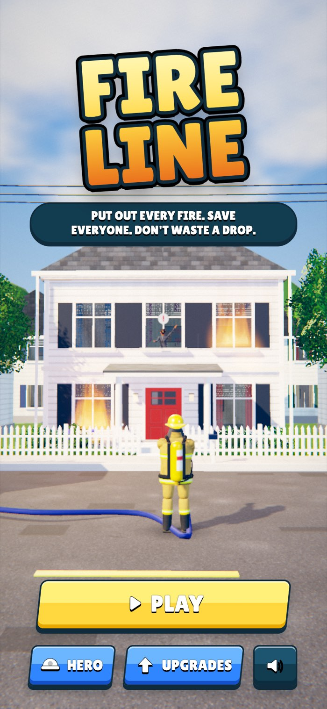
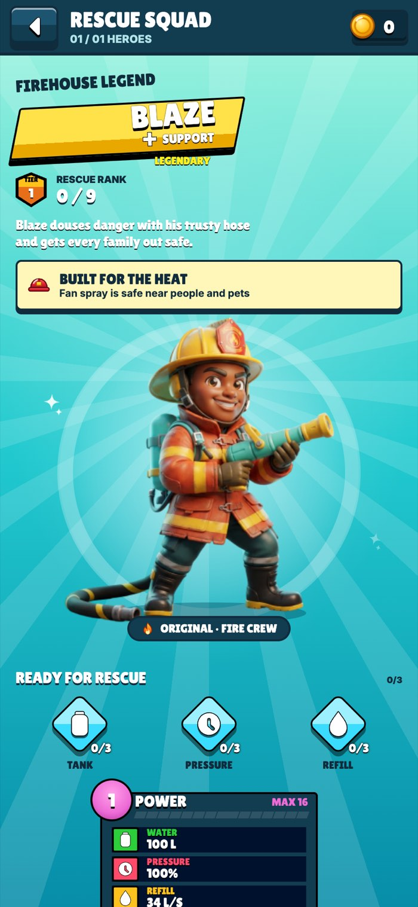
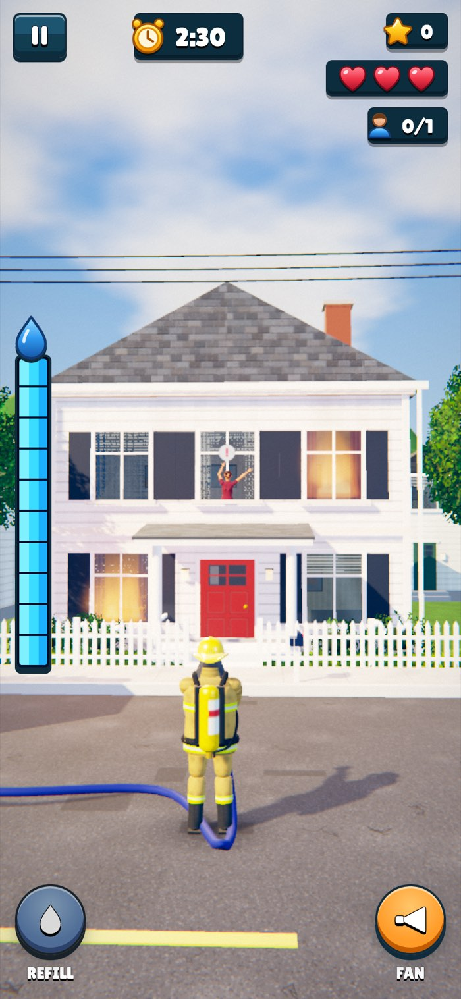
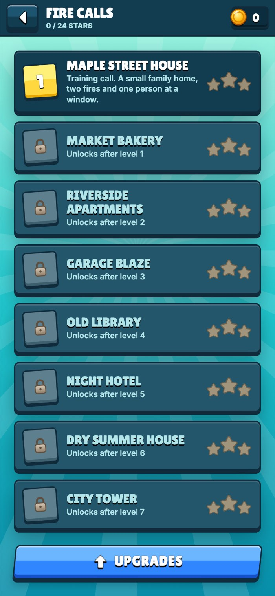
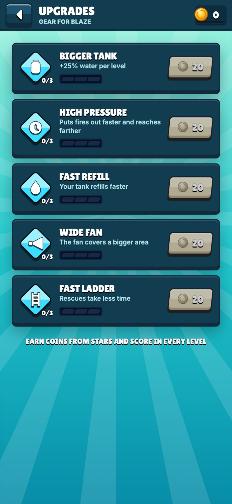

Fireline



My first game built with AI: a light, simple firefighter game, made with Claude, Higgsfield and Figma in a three-hour sprint.
My first game with AI, in three hours
Fireline started with a question: how would I build a game with AI for the first time, and which tools would I need to do it? To find out, I connected Claude to Higgsfield and a few more plugins, and paired that with my own design work in Figma, including a hero screen for a firefighter character named Blaze. I gave myself a deliberately short brief: about three hours of work, from the first idea to something anyone can open in a browser and play.
Game UI has to be tested by a thumb
Figma never runs a timer
Game UI that only lives in Figma never gets tested by a thumb. The buttons, counters and panels look right in a frame, but you only learn if they work once there is a timer running and a fire spreading behind them.
One short, focused loop
A short, focused game loop built around the existing design: put out every fire, rescue the people inside, and don't waste water, wrapped in the menus, upgrade screen and hero screen from the original Figma page.
Playable in about three hours
A playable build in roughly three hours: eight fire calls, five upgrades, a hero screen and a full in-game HUD, running in the browser on both phone and desktop.
The tools first, then a simple, addictive game
The tools came first. I wanted to see what it actually takes to make a game with AI, so the project began as an experiment in setting up the right workflow: Claude as the main builder, connected to Higgsfield and other plugins, with Figma as the place where I designed the look of the game.
The game itself came straight from my head. I didn't look for a complicated concept, I thought about a light, simple game that is quick to understand and hard to put down, the kind of "one more round" loop that can become addictive. A firefighter racing a spreading fire with a limited tank of water fit that perfectly.
Three rules before starting
This was a short project on purpose. With only three hours, every hour had to go into the parts a player actually touches, so I set three rules before starting.
The design leads
The Figma page is the source of truth, and the game is built to match it, not the other way around.
One clear loop
One core mechanic done well, putting out fires with a limited tank, instead of many half-finished ideas.
Ship something playable
Every level reuses the same core loop with a new twist, gas tanks, pets, high floors or fast-spreading fire, instead of building new systems for each one.
Easy to read in a split second
Most of the decisions were about making the game easy to read in a split second, while things are on fire.
Water as the main resource
A segmented tank on the side of the screen drains while you spray and refills from the truck, so every shot is a small decision rather than button mashing.
Two nozzles, two jobs
A wide fan spray that is safe near people and pets, and a stronger jet for bigger flames, switched with one large button under the thumb.
Readable at a glance
Timer at the top center, score, hearts and rescued people stacked on the right, all in the same navy pills from the Figma design.
A reason to replay
Each fire call is scored out of three stars, stars and score earn coins, and coins buy upgrades like a bigger tank, faster refill or a wider fan.
The hero screen, made real
Blaze's name plate, rank, gear and power stats from the original Figma page became an actual screen in the game.
An AI-first workflow
Claude, connected to Higgsfield and other plugins, turned the design into a working 3D build quickly, while I owned the idea, the game design, the UI and the visual decisions.
Menus, upgrades and the HUD


Straight from the Figma page
Everything comes from the Figma page: teal spotlight backgrounds, navy panels with a hard ink outline and drop, slanted yellow name plates, and Lilita One in white caps with a solid black shadow. Buttons are two-tone and slightly slanted, with yellow reserved for the main action.
Playable beats perfect
A time box sharpens decisions
With three hours there was no room to build everything, so I had to decide early what the core loop was and let each level build on it.
Game UI has to work under pressure
A counter that looks fine in a still frame can disappear once fire, smoke and water are moving behind it, so contrast and hard outlines matter even more here.
Playable beats perfect
A short build someone can actually play says more about a design than any static frame.
Thanks for reading!
More projects
Keep exploring the work.